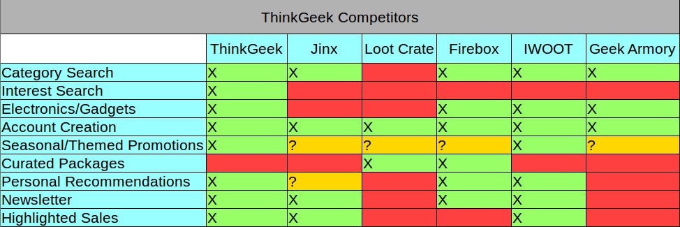
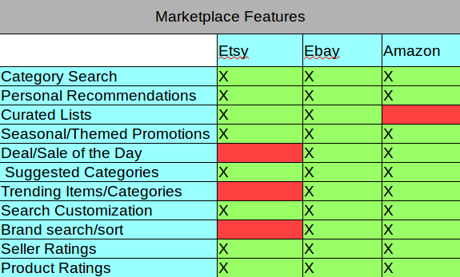
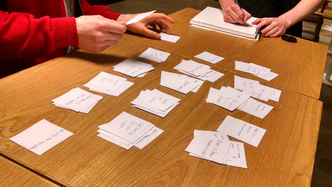
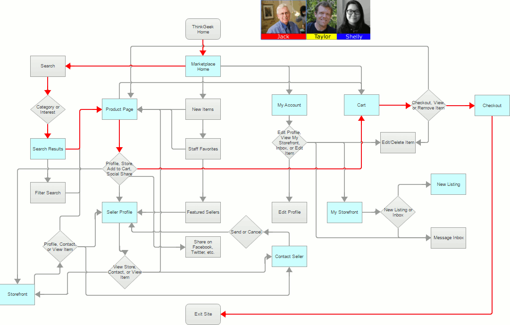
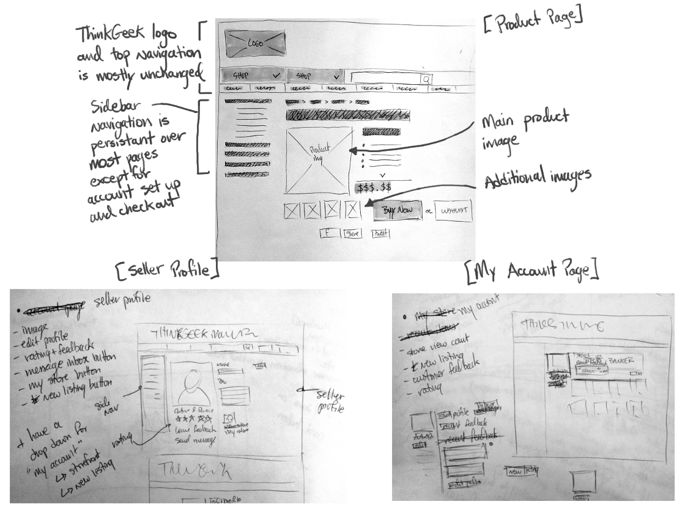
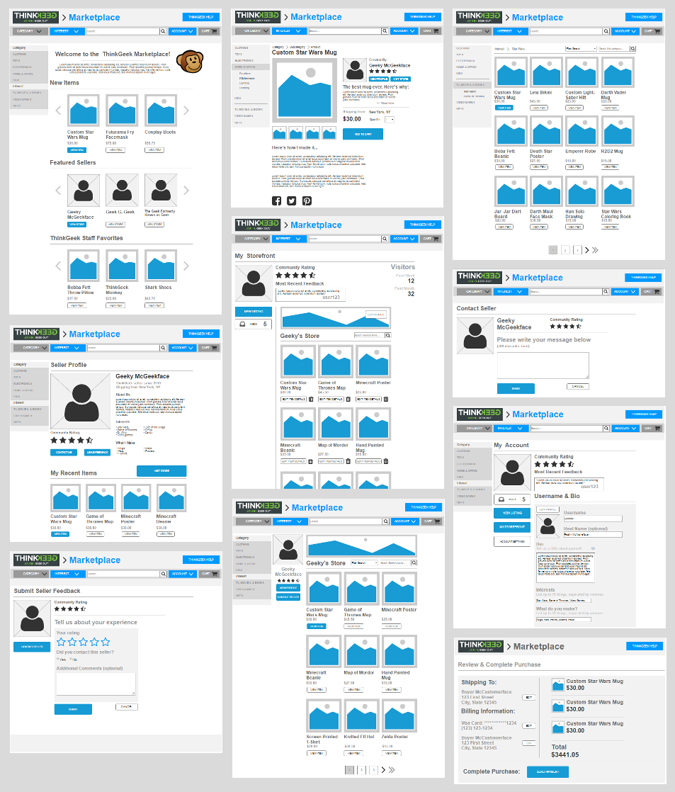

The Project
Overview
ThinkGeek was seeking to expand their retail e-commerce business by creating a marketplace within its site that allows its regularly engaged customers to sell their own fan-based loyalty products within the ThinkGeek brand realm. Some of the important requested features included: allows customers to contact sellers, allow each seller to establish their own brand and points of differentiation from other sellers, allow customers to contact ThinkGeek, allow customers to search for one or more product efficiently, and finally, seamlessly purchase and checkout.
I completed this project over the course of two weeks.
Research
Competitive Analyses
I conducted two competitive analyses: the first was designed to give me a better understanding of ThinkGeek's direct competitors.ThinkGeek was already the most well-known amongst the sites I looked at, offering more features than similar sites, excluding sites serving smaller niche markets.
The second was designed to give me a better understanding of the common features that shoppers have come to expect of online marketplaces to include them ThinkGeek's own, where appropriate.
Card Sorting
Marketplaces can have a huge variety of items that, due to their handmade and customized nature, could potentially be hard to classify. I wanted to see how potential ThinkGeek marketplace users would categorize various item and make sure to incorporate any methods of categorization that ThinkGeek had not already implemented.
For each subsequent sort, I made new cards using the categories from the previous (excluding the first, of course) sort, which the next user could use to help them categorize the items, if they desired. All of the categories that my card sorters created were already accounted for somewhere in ThinkGeek's preexisting search function.
Over the course of the card sort, major user-defined categories included: brand name (ex. Star Trek), accessories (watches, keychains, etc.), and superheroes. Secondary categories included things described as "tactical" (pocket knives, multi-tools, etc.), theme (sci-fi, fantasy, etc.), and even food/consumables.
Three Types of ThinkGeek Users
The project briefing that I was given included three personas designed to reflect the three main types of marketplace user that ThinkGeek sought to accommodate.
Jack represents the in-and-out marketplace user, whose main priority is to find an item quickly, and exit the site. Jack is not interested in engaging the community, but possibly glancing at seller reviews in order to better judge a potential purchase.
Taylor represents the more involved marketplace user, who is interested in coming back to the site to see what's new, and to learn more about sellers when they create something he likes.
Shelly represents the most engaged user of the marketplace, requirement the greatest range of functionality. Shelly wants to actually sell her own items, as well as engage other buyers and sellers in the ThinkGeek community.
User Flows
Based on each users' needs, I began designing their flow through the marketplace site. Jack spends the least amount of time requiring the least amount of features, Shelly the most amount of time and features, and Taylor falls somewhere in the middle.
Ideation
Initial Sketching
ThinkGeek's layout is familiar to its long term users, so in terms of placement of dropdown menus, search bars, etc. I wanted to keep as much of this familiarity as possible, so as not to confuse a user moving between the main site and the marketplace.
I ended up doing far fewer sketches, and at a lower fidelity, than is typical for me. Because I had the preexisting ThinkGeek site to work with, I had a good idea of what the layout of the new pages would be even before sketching, so in order to save time I started building wireframes relatively quickly.
Wireframing
I needed to make a large number of screen for this project, but thankfully many of them had the same elements, like the top and side navigation bars for example. Rather than attempt to explain every one here, view the clickable prototype below for a better look at the invidual screens.
Clickable Prototype
Finally, I designed the clickable prototype using Axure. If you would like to click through the pages yourself, click here. Otherwise, you can view the video demo below.
Retrospective
Overall I think I did a good job putting together the clickable prototype, and designing all of the necessary screens. I would have liked to perform more usability testing with the final design, but time constraints prevented this. Also, it would have been fun to get a bit more creative with the layout of the marketplace itself, instead of sticking to ThinkGeek's overall structure. However, as stated, I didn't want to confuse users by making something that looked too unlinke ThinkGeek's main site.